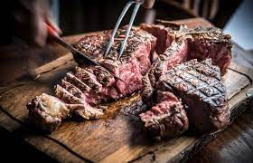

Go Home
Bistecca alla Fiorentina

Description
This is a description of a Bistecca alla Fiorentina, wich I really like
and in my family we're used to eat a lot of it.
Not so much anymore since I got out of my parents' house.
Ingredients
Steps
- Prepare the fire/li>
- Put the Bistecca on the grill once the fire is super hot but with no flames
- 5 minutes per side max
- Optional - Place it straight on its bone for 3/5 minutes
- Take out and let it rest for 5 more minutes
- Cut in big chunks and eat it!